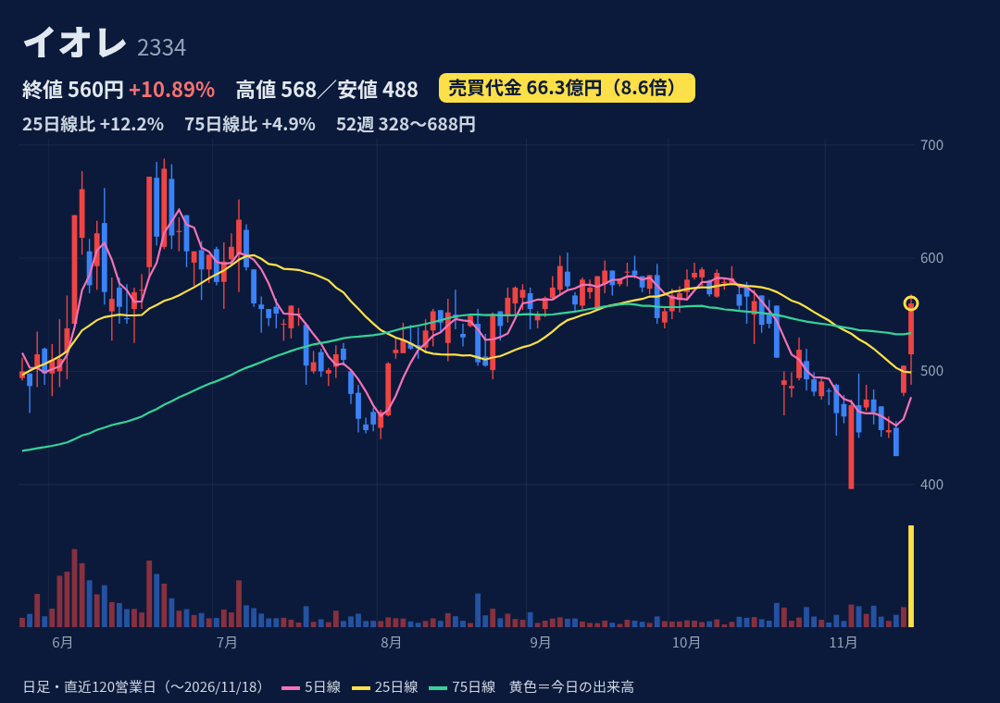
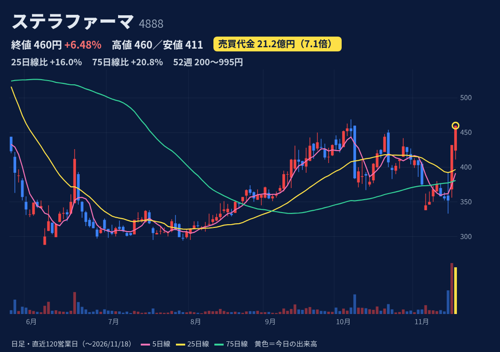
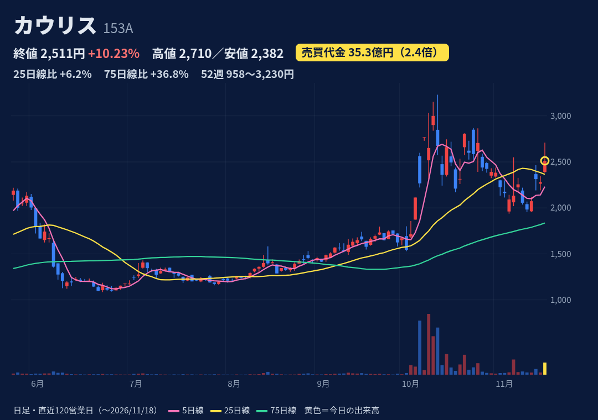
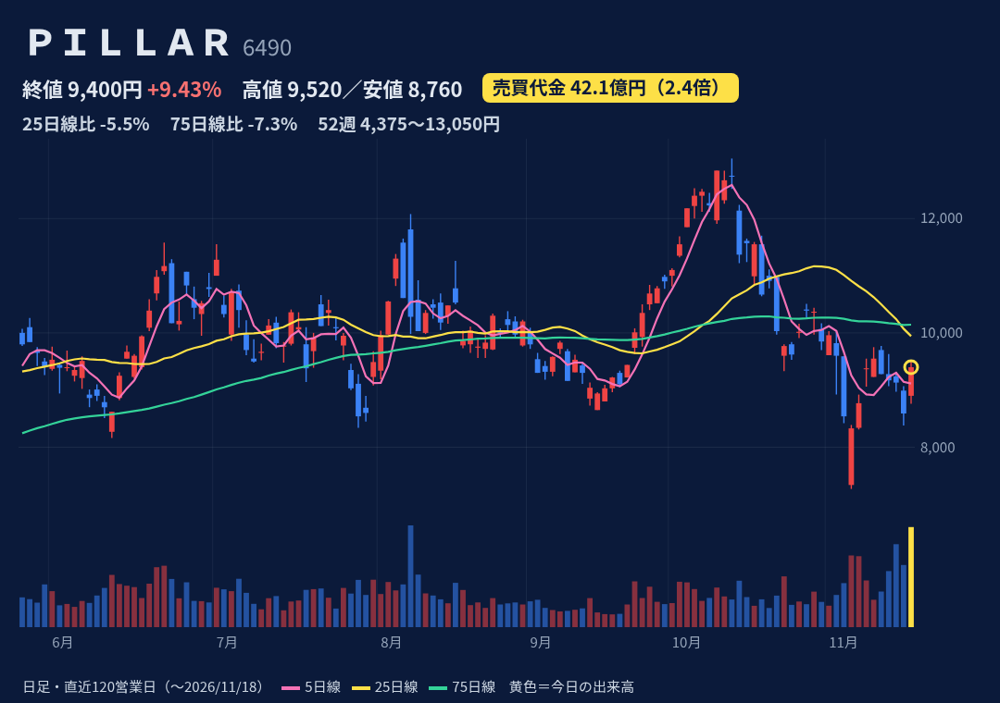
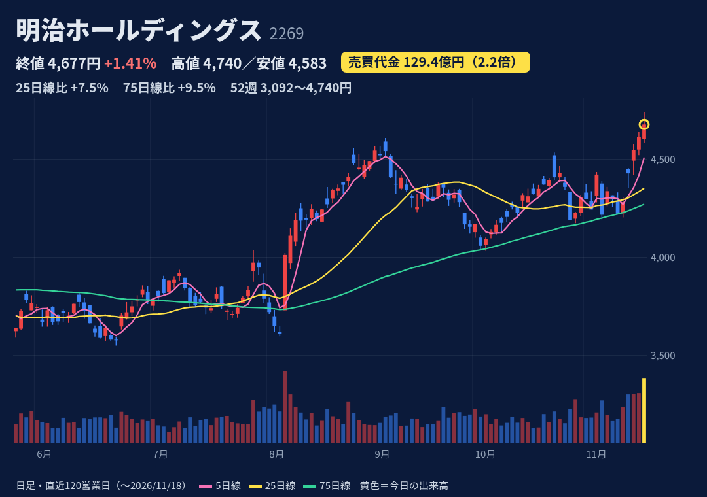

求人広告から事業転換し、AIデータセンター（GPUサーバー販売・計算力提供）と暗号資産運用が中心
11/16 15:30に通期予想を上方修正（売上255.5億→484億、営業益11.4億→26.3億。GPUサーバー好調とWOODMAN連結）。11/17はS高。11/18は新しい開示なし（材料2日目）
上期：売上138.2億、営業益4.96億（連結初年度で前年比なし）。通期予想：売上484億、営業益26.3億。進捗は売上29%・営業益19%で下期偏重。次回決算日は未確認
始値515・高値568・安値488・終値560の陽線で上ヒゲ小。2日で＋32%。52週高値688（6/22）・安値328、位置64%。25日線を＋12%、75日線を＋5%上回る。6/4に＋19%→5日後−12%の前例
信用買残1,095.5万株・売残12.4万株、倍率約88倍（JPX・11/17時点）。買残は発行済みの約25%と重い。日々公表・増担保は未確認
希薄化：WOODMANとの株式交換で約344万株を11/30に交付予定（11/27臨時総会）、第15回新株予約権も残る（行使代金見込78.7億）。暗号資産の売却損2.7億を3Qに計上予定。11/13にNotion経由の情報流出を開示

がんの放射線治療（BNCT＝ホウ素中性子捕捉療法）用のホウ素医薬品「ステボロニン」の開発・製造販売
11/16 9:30に再発髄膜腫への適応拡大の承認を開示（国内初）。同日15:00には皮膚血管肉腫の審議を11/30の薬事審議会部会で行うと開示。11/17に一時S高。11/18は新しい材料なし（引け後に株式譲渡報告書）
上期：売上1.75億（−12.5%）、営業損失4.98億（前年は−2.98億で赤字拡大）。通期予想：売上10.38億（＋221%）、営業損失6.96億。売上の進捗は17%。次回決算日は未確認
始値424・安値411・高値＝終値460で上ヒゲなし。2日で＋31%。52週高値995（3/25）・安値200、位置33%。25日線を＋16%、75日線を＋21%上回る。3月に995まで急騰した後、5月には357まで下落
信用買残240.2万株・売残9.9万株、倍率約24倍（JPX・11/17時点）。株探の週次倍率は82.89倍（11/13）。日々公表・増担保は未確認
赤字が続き、第三者割当（CVI）で資金を調達している。第8回新株予約権105万株（行使価額567円）が未行使。CVIは11/17に30万株を432円でBofA証券へ譲渡（累計60万株）。低位の小型株

金融機関向けのクラウド型不正アクセス検知（不正送金・マネロン対策）。電力データを使う本人確認サービスも提供
会社の開示はなし。株探（11/18 10:20）によると、楽天証券が11/17に最大約447万口座の顧客情報漏えいを発表し、金融系セキュリティ株（セキュアヴェイル・サイバートラスト等）とともに買われた。11/16には飯田信金のKYC導入を開示
3Q累計：売上12.34億（＋20.1%）、営業益4.38億（＋33.6%）。通期予想：売上16.47億（＋17.6%）、営業益5.32億（＋30.4%）。進捗は売上75%・営業益82%。次回決算日は未確認
始値2,390・高値2,710・終値2,511。上ヒゲが値幅の約6割。52週高値3,230（10/14）・安値958、位置68%。25日線を上抜け（＋6%）、75日線を＋37%上回る。10月の急騰後、11/6に1,937まで約4割下げた前例
信用買残23.0万株・売残3.2万株、倍率約7.2倍（JPX・11/17時点）。株探の週次は7.10倍（11/13）。日々公表・増担保は未確認
PER46倍・PBR9.5倍（株探）と割高な評価。発行済み約653万株の小型株で値が飛びやすい。テーマ物色は短命になりやすく、10月高値後の急落の前例がある

メカニカルシール・パッキン大手。半導体・液晶製造装置向けのフッ素樹脂製品「ピラフロン」が伸びている
当日の開示・個別ニュースは確認できず。直近の材料：11/12に上方修正（営業益200億→235億）・1対3の株式分割・増配、11/16にエフィッシモが5.61%保有と報告。今日の上昇は、エヌビディア好決算による半導体株の戻りと推測
上期：売上418.1億（＋48.5%）、営業益117.7億（＋109.9%）。通期は11/12に上方修正：売上900億、営業益235億。営業益の進捗50%。次回決算日は未確認
始値8,900・高値9,520・終値9,400の陽線。52週高値13,050（10/14）・安値4,375、位置58%。25日線（9,942）・75日線（10,143）はまだ下回る。11/17は−5.9%。売買代金3倍超の日は1年で3回と少ない
信用買残4.2万株・売残0.7万株、倍率約5.8倍（JPX・11/17時点）。株探の週次は11.56倍（11/13）。日々公表・増担保は未確認
半導体市況とエヌビディア関連ニュースの影響を受けやすい。10月高値から約3割下げた戻りの途中。1対3分割の基準日は12/31。エフィッシモの今後の動き（買い増し・売却）は不明

菓子・乳業の最大手。医薬品（Meiji Seikaファルマ：ワクチン・ジェネリック）も持つ
11/17にMeiji Seikaファルマが米アークトゥルス（mRNAワクチン）への戦略的出資で合意したと発表（フィスコ：約80億円・7.9%の見込み）。独占ライセンスとパンデミック協業の覚書も。TDnetの開示はなく、会社の原文は未確認
上期：売上5,983.7億（＋4.1%）、営業益478.9億（＋17.0%）。通期の売上予想を1兆2,250億に引き上げ、営業益1,000億（＋7.2%）は据え置き。進捗は48%。次回決算日は未確認
始値4,604・高値4,740・終値4,677の陽線。上ヒゲは値幅の約4割。52週高値を更新し、位置96%。25日線を＋7.5%、75日線を＋9.5%上回る。売買代金3倍超の急増は過去1年で0回
信用買残7.3万株・売残7.9万株、倍率約0.9倍（JPX・11/17時点）。売りと買いが同じくらい。日々公表・増担保は未確認
大型のディフェンシブ株で、値動きは小さめ。4日続伸で短期の過熱に注意。出資額・比率はフィスコ報道ベースで、会社の原文は未確認。為替・原材料の影響で、利益予想は据え置き
株価・出来高・信用残：取引所データ。材料：各社開示・各社報道。